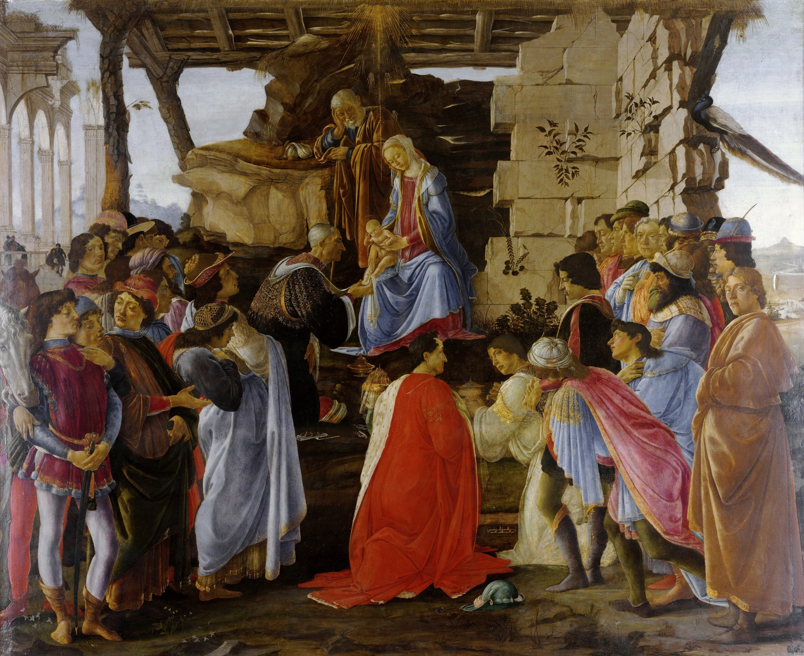
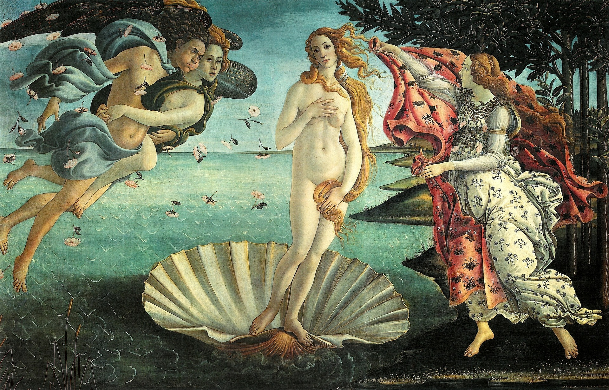
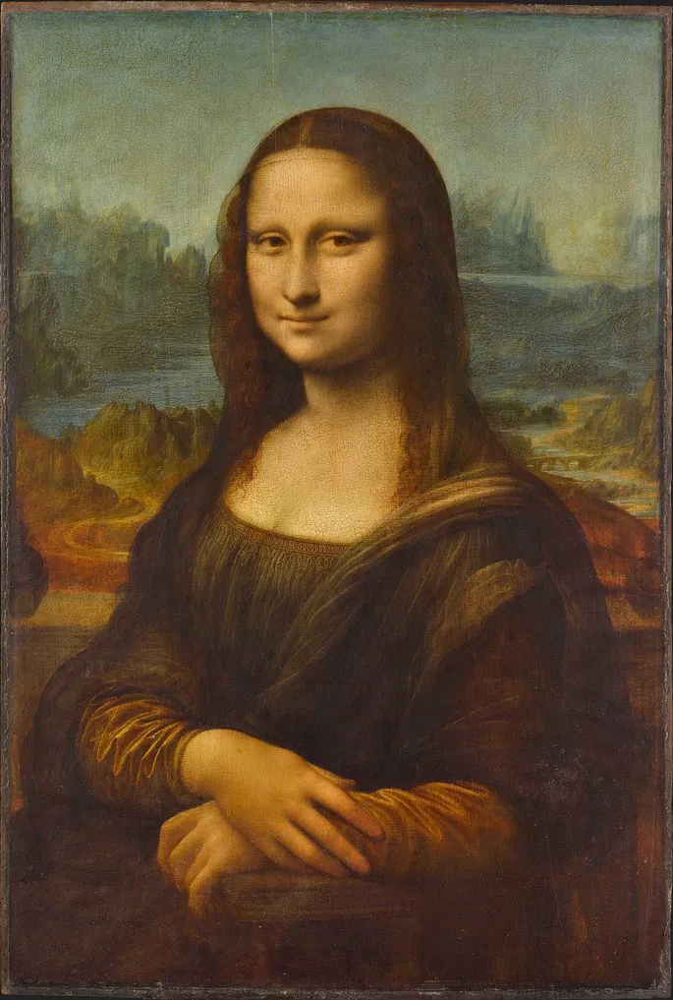
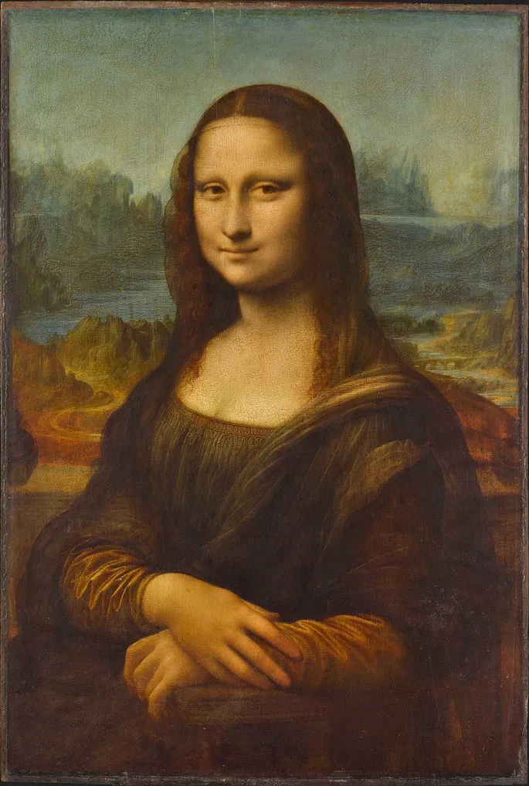

MEJORES OBRAS
Adoracion a los magos 1475-1476
Ilustración de la divina comedia 1480

La primavera 1478-1482.
Palas y Centauro 1482

Venus y Marte 1483.
El nacimiento de Venus 1483-1485.
Portrait of Dante 1495.

 
